across the bridge
we sleep the sleep
of the blue-white sheet
reflecting mute
bright power
to illumine
- 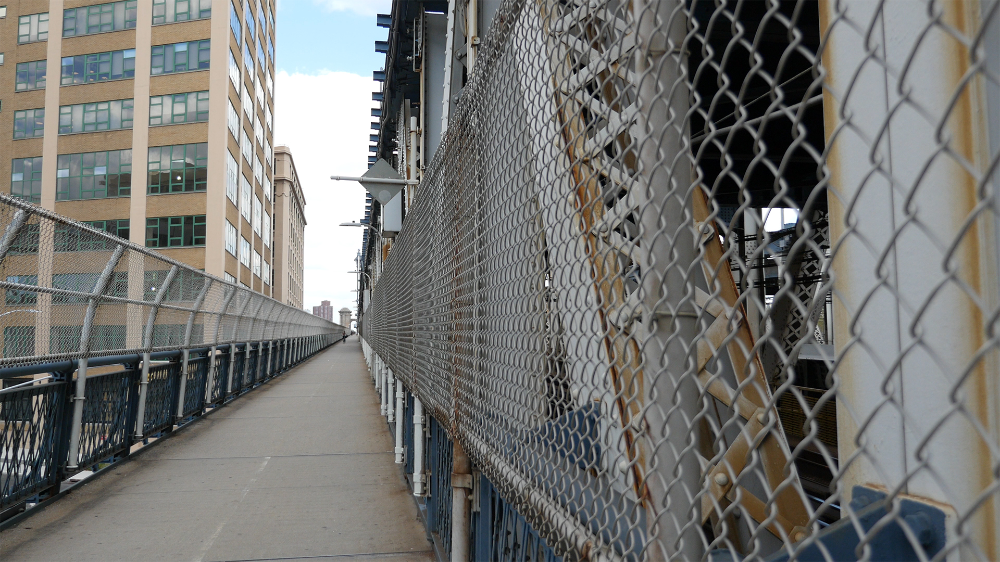
- 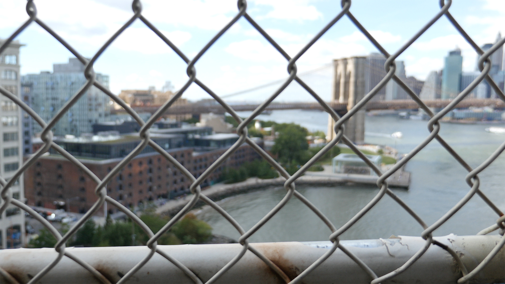
on the bridge I have one foot
in Brooklyn the other in the city
it is the only time i can see for miles
"/> - 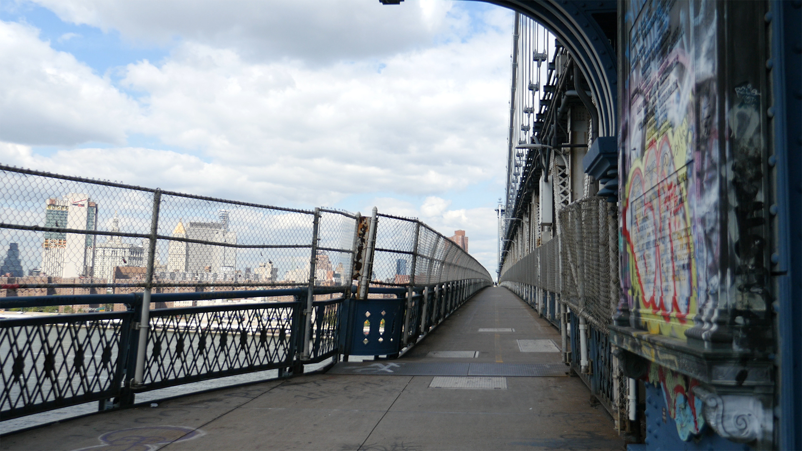
to usher in
the eyes purview
a radiance
illuminates
aluminum can trains
slugging across
its latticework applied
"/> - 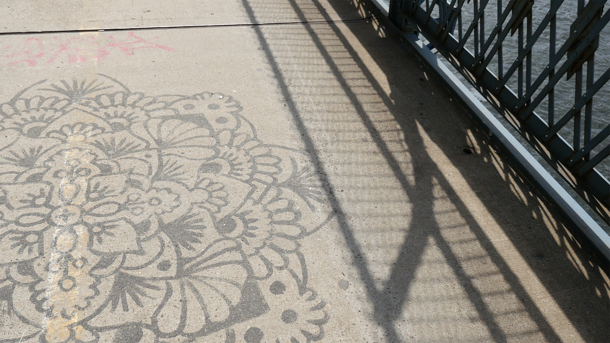
and we are at the edge
of the city of tomorrow
and now we are driving right in
to the city of right now
the paint on the bridge
is the blue white of milk
- 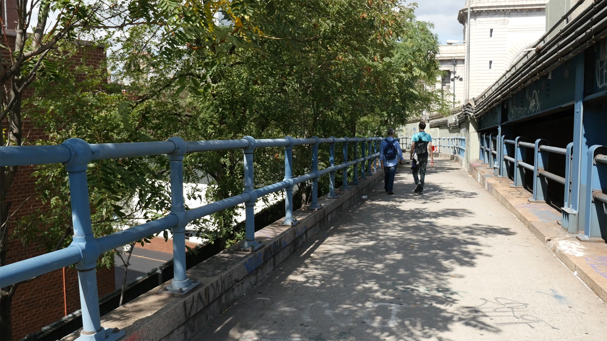
prehistoric ferns grow
beside lagoons with honest
to god dinosaurs
"/> - 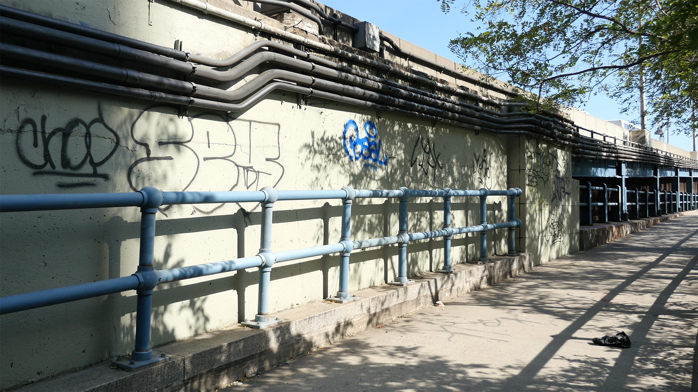
so the yellow shot of gold
llumines all the same
city of no possession
city of the passing thought
"/> - 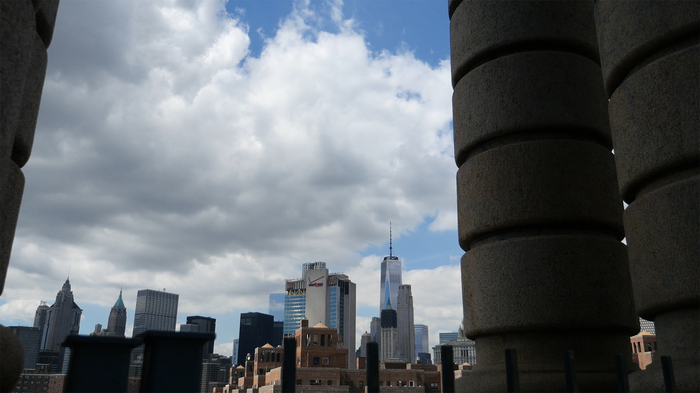
- 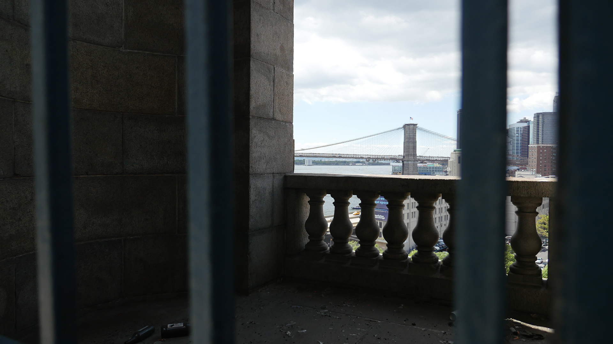
over a green colossus
and her fleet of progress
that noses over a steel sky
"/> - 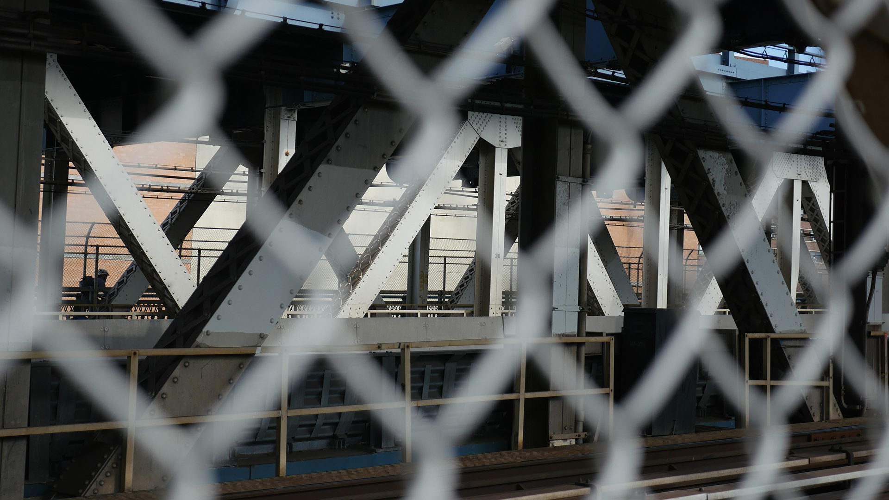
- 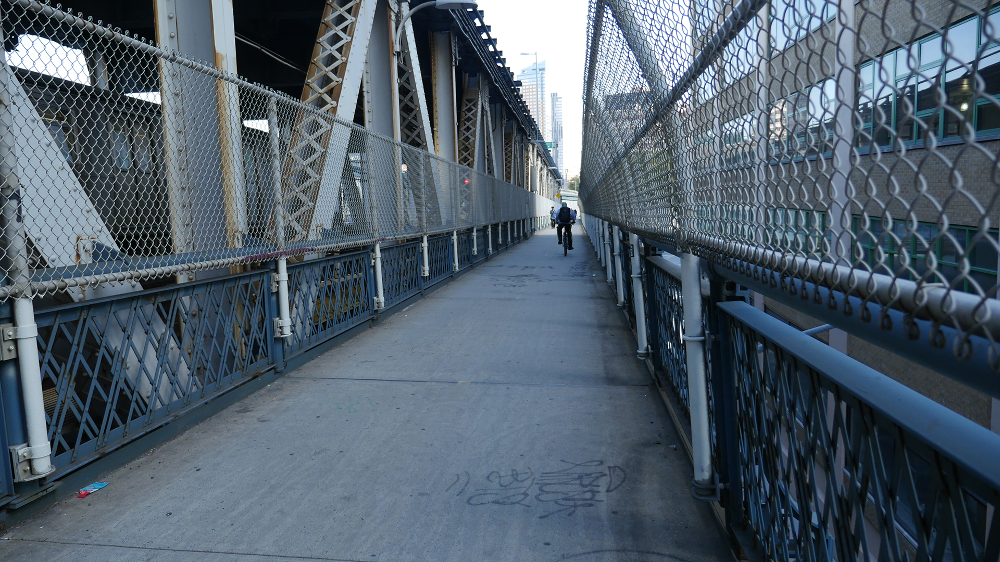
on the lookout for a final end
so there will be one
to the story she tells
to her millions of people
she is looking at the city
with thousands of eyes
- 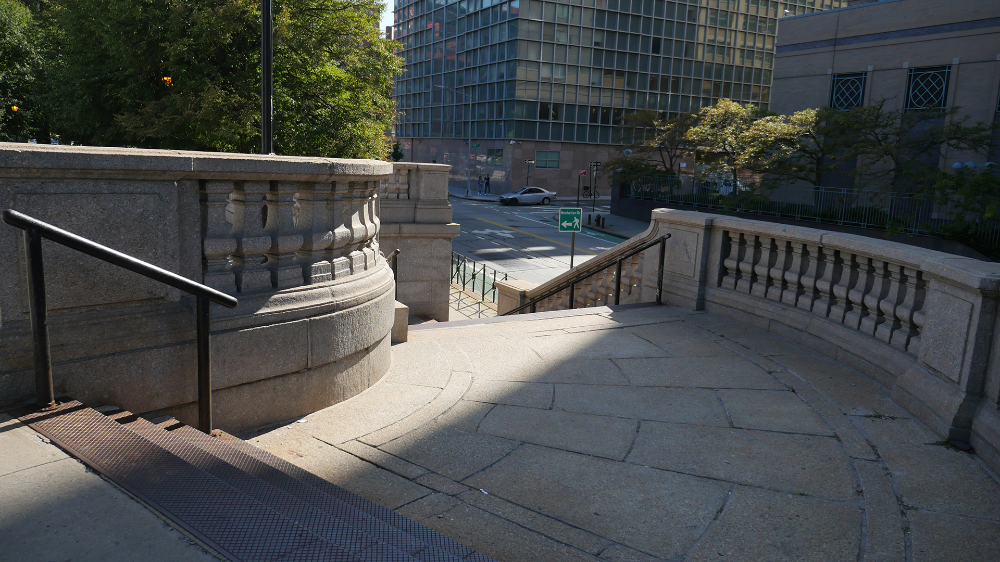